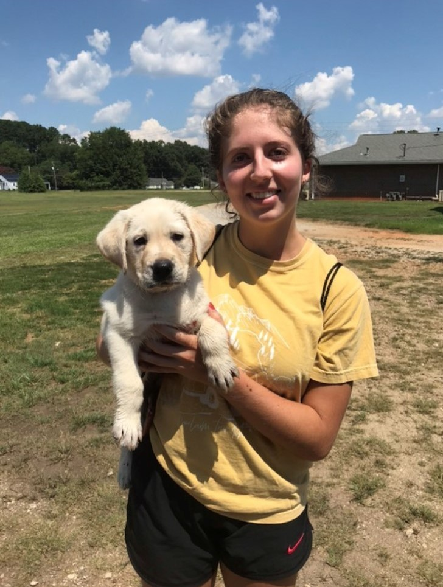
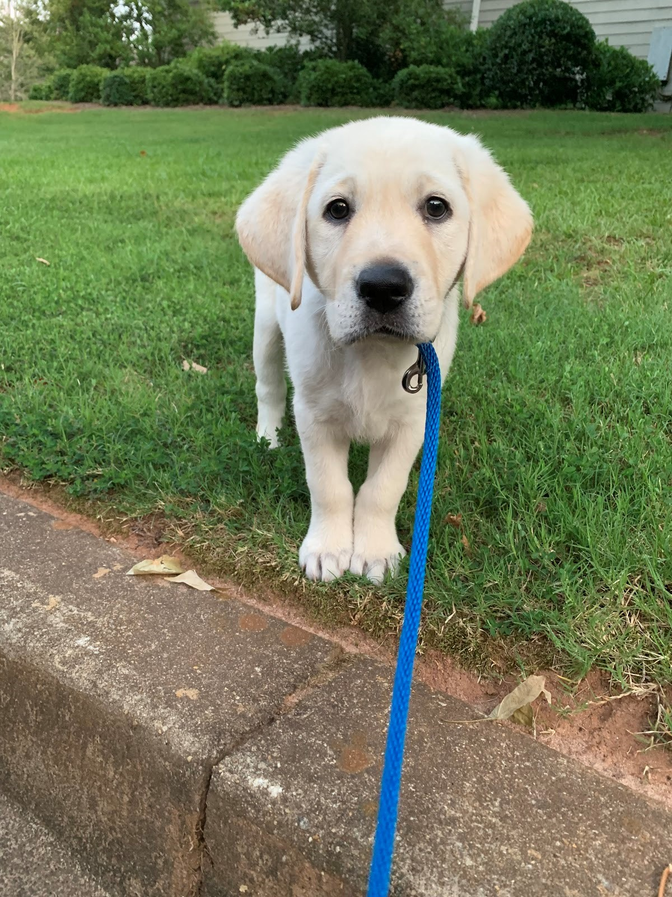
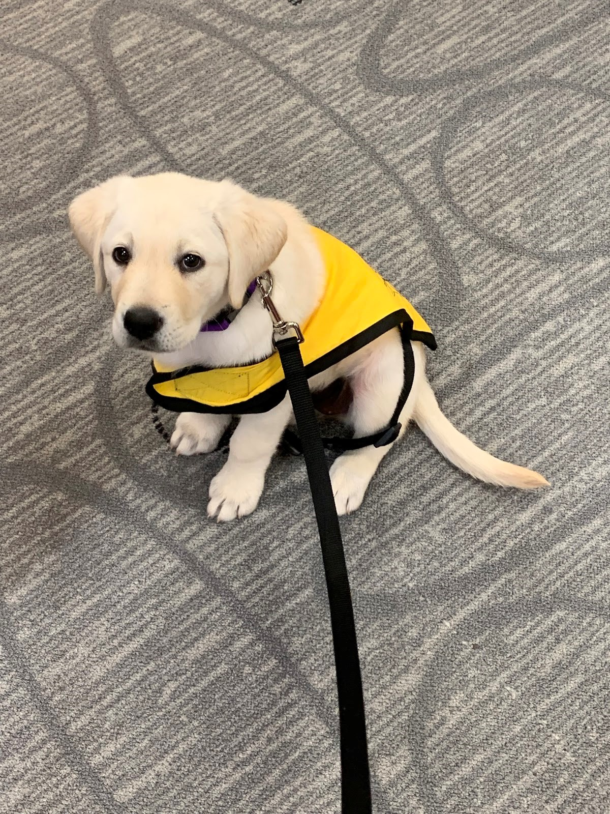
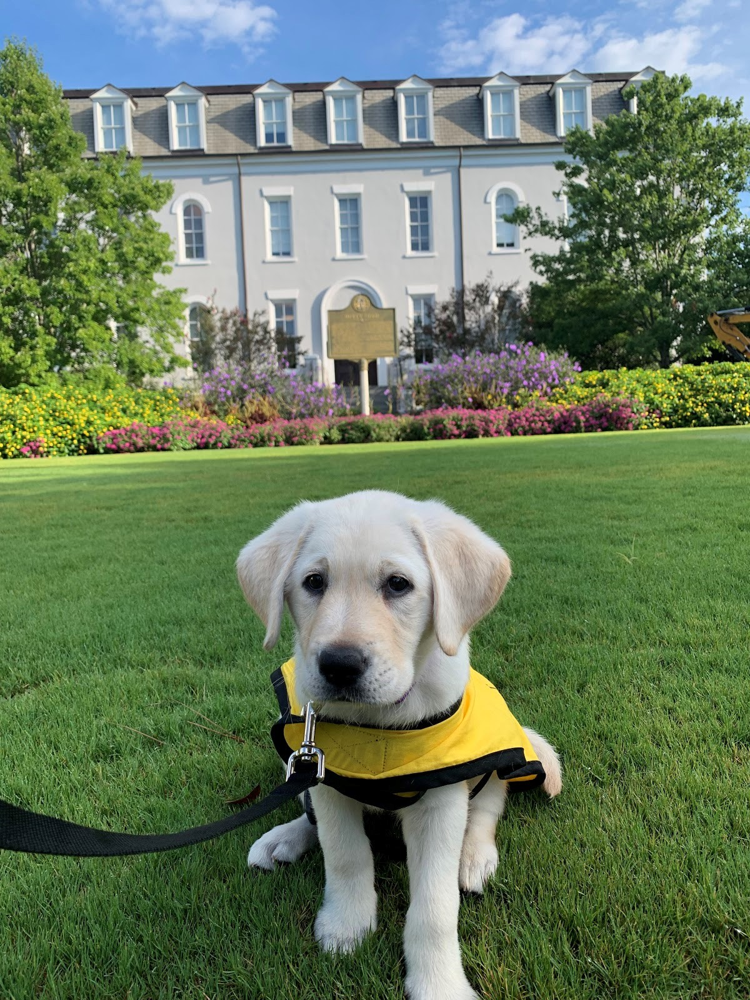
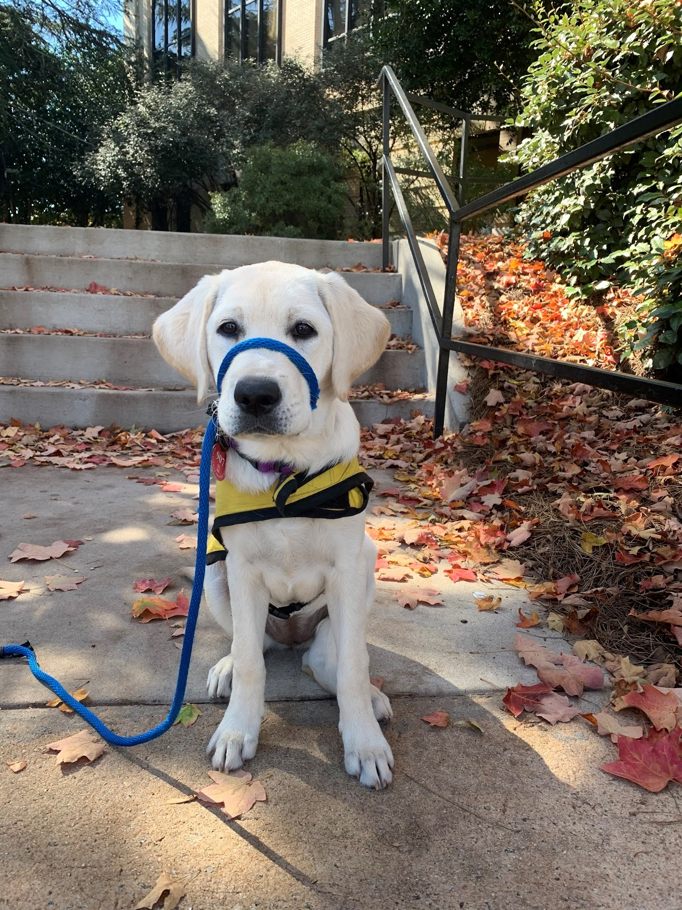
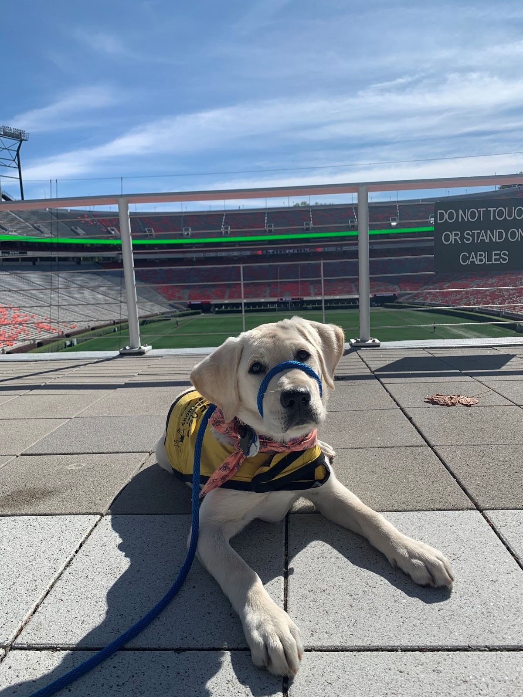
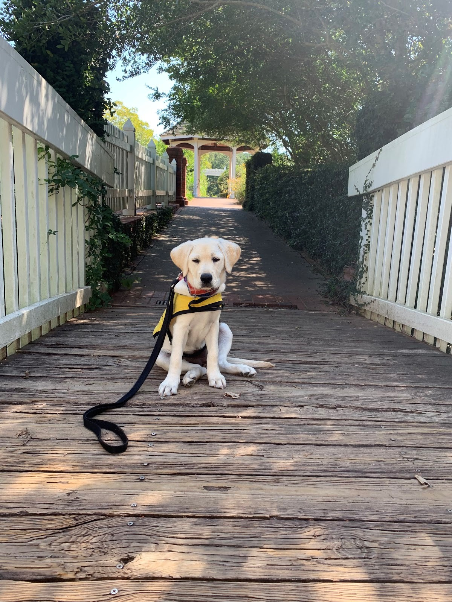
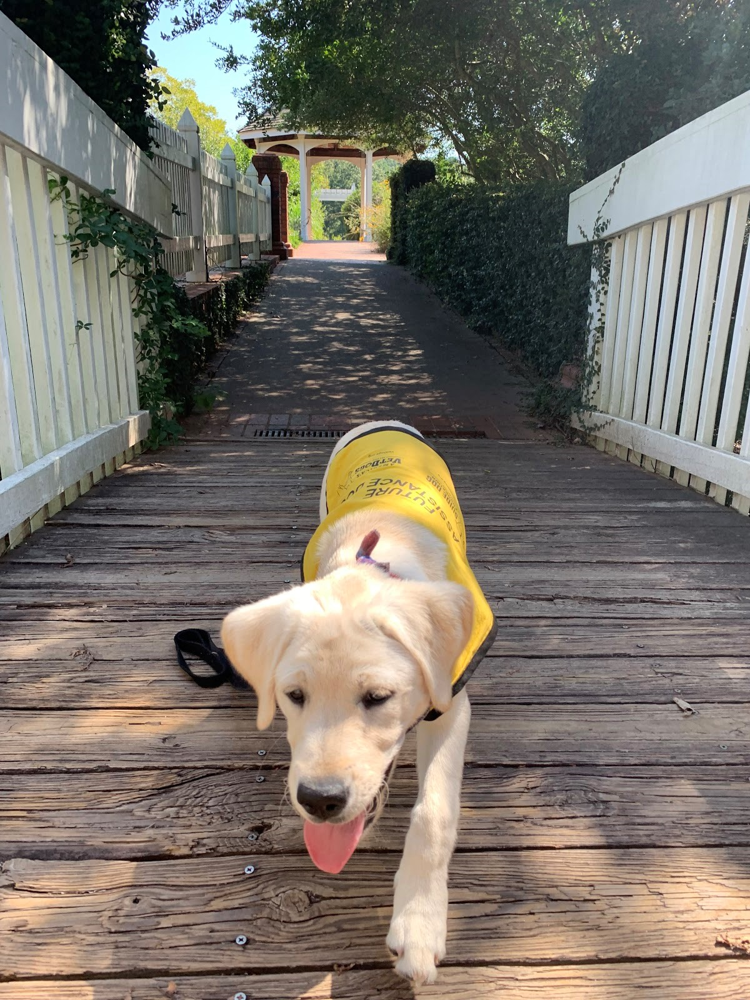
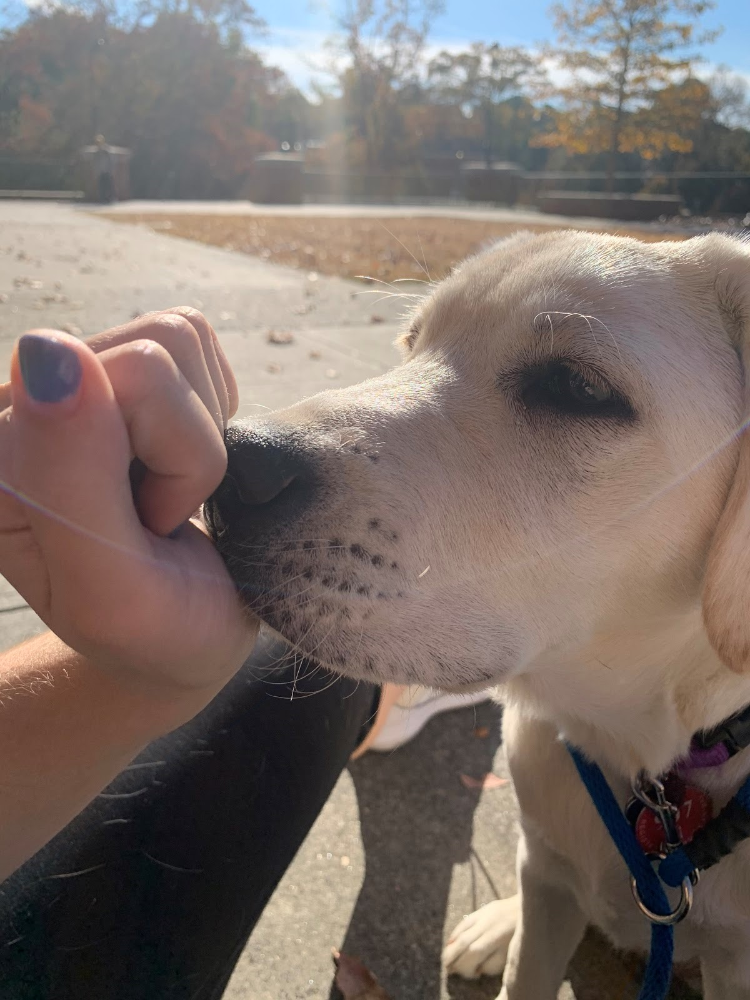
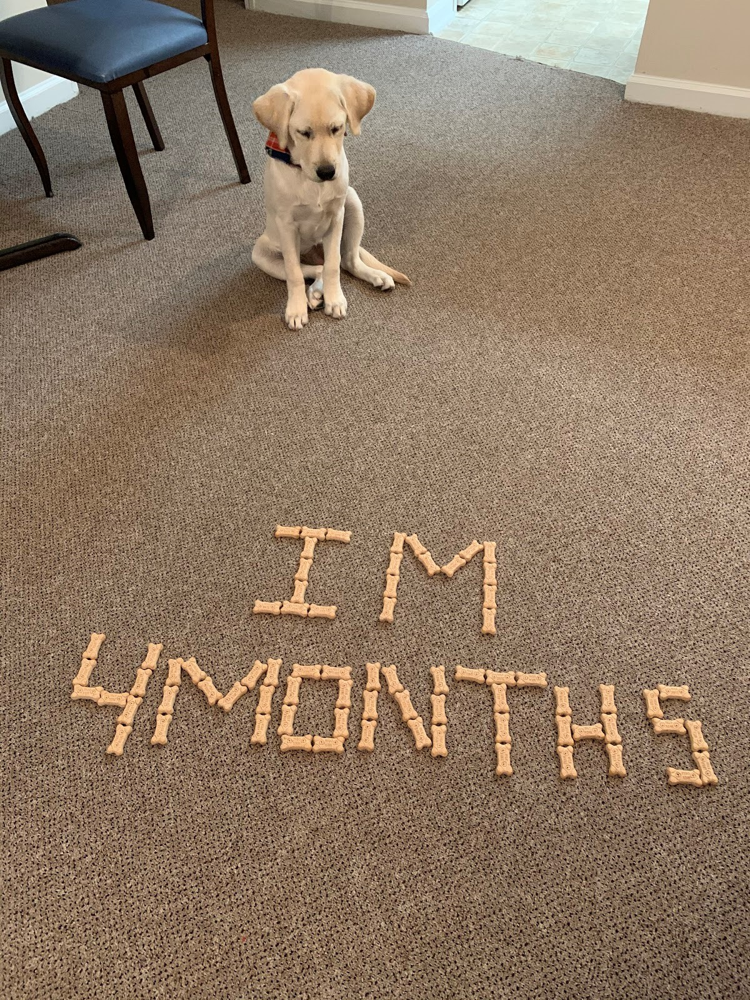

.
.
.
.
.
.
.
.
.
My journey with the Guide Dog Foundation for the blind started when I first came to UGA and saw tons of guide dogs walking around
with their student handlers. I went up to the first girl I saw, and I asked her how I could do something so awesome and meaningful.
She set me up with all the details and I was hooked.
It started with meetings upon meetings and obedience training classes, which I thoroughly enjoyed.
I got to work with many other raisers' dogs and my excitement grew. Then classes were over for the spring semester and I was sad that
I didn't have my own pup to train yet; boy was it worth the wait!
August 18th, 2019 - Gotcha Day!
I went to the pickup location and got to meet the dog I would be spending the next year and a half with. It was so exciting!
I mean just look at how cute she was when I picked her up!
|  | 
|
 |  |
| Sit | Down | Stay |
|---|---|---|
|  |  |  |
| Come | Touch | Leave It |
|  |  |  |
Madison still has so much to learn and we have about a year or so of training together left.
If being a guide dog ends up not being Madison's calling, there are so many other things she will be able to train for!
Madison could be a
And if none of these end up being the life for Madison, she will be up for adoption
and you bet I will be first in line to get back the dog I raised with all my blood, sweat, and tears.